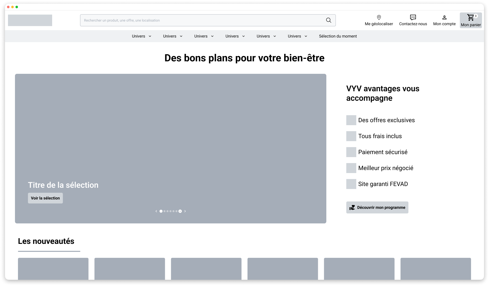

Plateforme numérique de santé
Contexte
Une plateforme numérique présentait des problématiques d’expérience utilisateur, nécessitant un accompagnement des équipes pour structurer les pratiques UX et améliorer la qualité globale des interfaces.
Objectifs
- Former l’équipe aux grands principes de l’UX design et de l’ergonomie des IHM ;
- Intégrer ces principes dans le processus de conception pour améliorer les parcours utilisateurs.
Rôle & démarche
- Création et animation d’un support de formation UX sur-mesure ;
- Ateliers et design sprint pour identifier et prioriser les irritants des parcours ;
- Maquettes basse fidélité illustrant les bonnes pratiques et solutions ;
- Collaboration avec les équipes dev pour transformer les insights en spécifications et feuille de route.
Impact / Résultats
- Feuille de route alignée avec les objectifs commerciaux et validée par l’équipe ;
- Méthodologies UX intégrées dans le processus de conception ;
- Implication des développeurs et adoption des recommandations UX.
